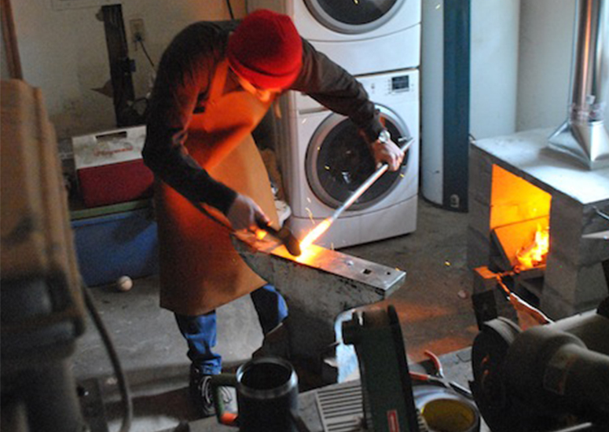
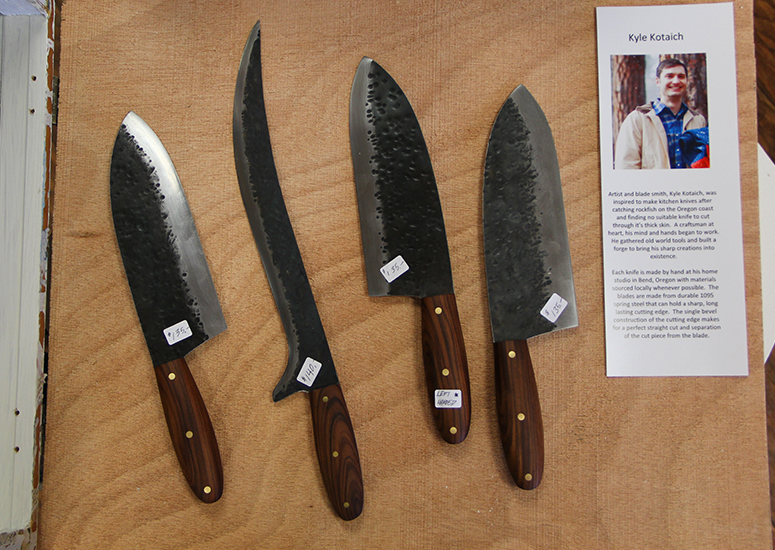

Chef's Forge
Artist and Blade Smith, Kyle Kotaich was inspired to make kitchen knives after catching rockfish on the Oregon coast and finding no suitable knife to cut through their thick skin. A craftsman at heart, his mind and hands began to work. He gathered old world tools to build a forge and bring his sharp creations into existence.
Each knife is made by hand at his home in Bend Oregon with locally sourced materials whenever possible. The blades are made with a durable 1095 spring steel that holds a sharp, long lasting, cutting edge. The single bevel construction of the cutting edge makes for a perfect straight cut and improves cooking workflow by moving cut pieces away from the blade.
- 
- 